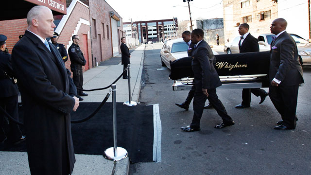
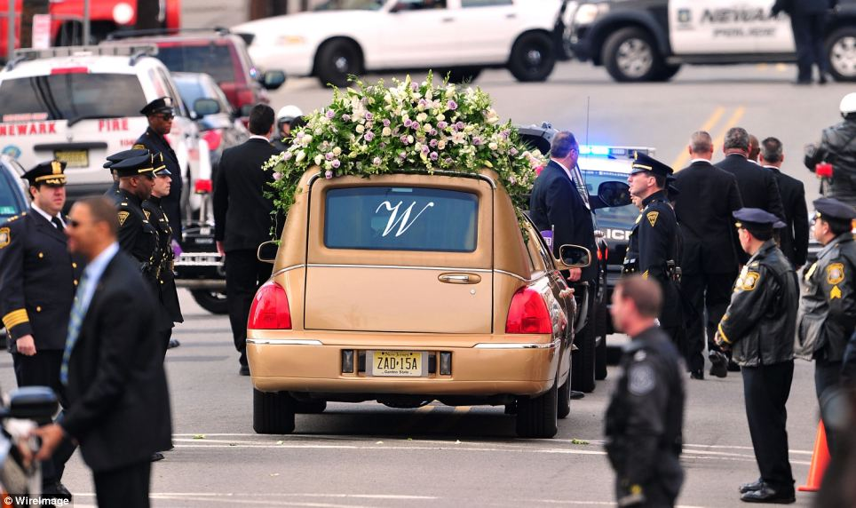
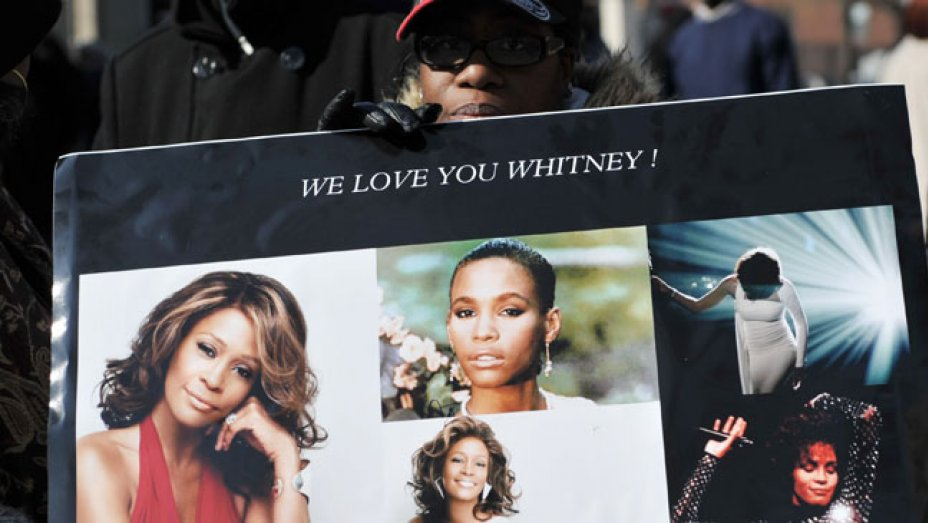
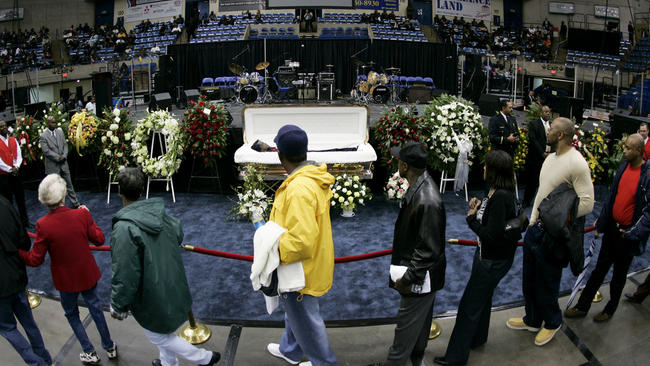
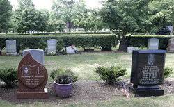

Death & Memorial
On February 11th of 2012, Whitney Houston died in Beverly Hills, California. She was expected to attend a pre-Grammy party on that day and later the Grammys. Celeberties were struck to hear the news of her death and later her death reached to media outlets. Her last performace was 2 days before her death. She was found dead in her Hotel room drowned in her bathtub but was overwhelmed with drug addiction. Dispite this however, she was beloved by many artists and fans. Tributes from News outlets, radio stations and music channels were playing songs by her and interviewed people who were close or worked with her.

A week later, there was a funeral service for Whitney in the New Hope Baptist Church. Where her talent for singing began. It was Memorial where so many were invitied. Members of the church, family, friends and other well known celebrities. Her ex-husband Bobby Brown and daughter Kristina Brown were devastated with her death and attended her funeral but Bobby Brown left for a breif moment. Famous singers who were close to Whitney sang in memory of her, even the church's choir were singing as well. Friends and family went up and spoke of her life and how her voice brought joy and happiness. Those who attended the funeral were there not just to mourn for Whitney but to celebrate her life.The service was scheduled to last for 2 hours but went on close to 4 hours.

She would be buried on February 19th,2012. Streets were filled with fans as they saw the service made there way to Fairview cemetery. Her casket was brought in with a golden herse. Her burial was private for her family and was buried right next to her father John Russell who died in 2003. Today, she is still remembered as an influencial singer of her time. Her music can still be heard today in radios and music channels. She even still holds the record for the most awarded female artist of all time.